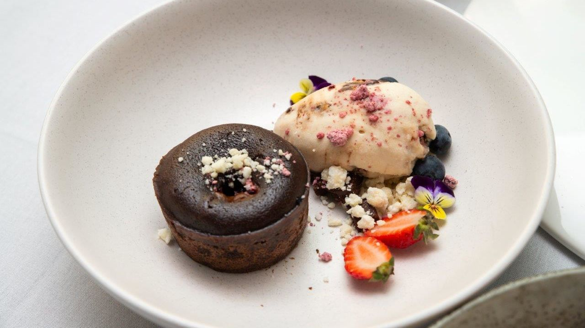
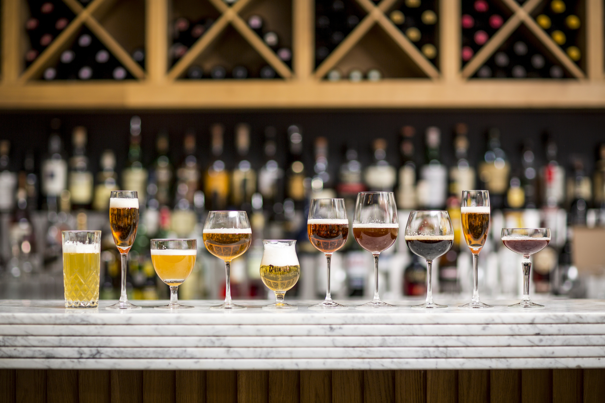

Menu
Appetisers
REWENA BREAD 10
Traditional Māori bread.
PAUA FRITTER 16
Finely diced pieces of paua, served with a side salad and horopito dressing.
RAW FISH 20
Dried snapper fish marinated in coconut cream, served with tomatoes and spring onions.
POACHED SALMON 22
Salmon poached in an orange and pistachio glaze, served with rewena bread.
SEAFOOD BASKET 25
Crumbed mussels, salt and pepper squid, crumbed hoki bites and garlic prawns.
Main
FISH OF THE DAY 25
Beer battered fish and kumara fries, served with a side salad and homemade tartare.
MUSSELS AND SCALLOPS 25
Steamed mussel & scallop mousse, honey and soy broth.
SEAFOOD CHOWDER 30
Creamy chowder filled with terakihi, prawn, hoki, scallops and mussels, served with flatbread.
PORK BELLY 30
Slow cooked pork belly served on a bed of apple slaw with roasted kumara, and crispy noodle.
LAMB STEAK 33
Crumbed mussels, salt and pepper squid, crumbed hoki bites and garlic prawns.
VENISON 33
Venison crusted with horopito, served with glazed plums, cabbage salad and red wine Jus.
Dessert
KĀPITI ICE CREAM 10
Check for daily specials.
STEAM PUDDING 12
Golden syrup flavoured steam pudding, served with vanilla ice cream
MINI PAVLOVA 16
Mini Pavlova served with kawakawa and lemon infused cream and fresh fruit.
BANOFFEE PIE 16
Toffee, fresh bananas and fresh cream.
Beverages
RED - B/G
Terrace Edge Pinot Noir, 2012, Wairarapa - 53/12
Altitude Pinot Noir, 2010, Marlborough - 64/15
Greystone Pinot Noir, 2012, Wairarapa - 73/17
Terrace Edge, Syrah, 2012 Wairarapa - 53/13
Altitude Syrah, 2010 Marlborough - 64/15
Greystone Syrah, 2012, Wairarapa - 73/17
Pegasus Bay Merlot, 2013, Waipara - 65/14
Pegasus Bay Pinot Noir, 2013, Waipara - 110
WHITE - B/G
Spade Oak Pinot Gris, 2011, Gisborne - 40/10
Maude Pinot Gris, 2017, Otago - 49.50/11
Charles Wiffen Chardonnay, 2013, Otago - 48/11
Amisfield, Riesling, 2016, Otago - 53/12
Lamont Riesling, 2010, Otago - 57/13
Elephant Hill Viognier, 2013, Hawkes Bay - 55/12
Folium Sauvignon Blanc, 2011, Marlborough - 52/11
Billecart-Salmon Brut Reserve, France - 120
BEER AND CIDER
Garage project range - 11
Tuatara range - 11
Panhead range - 10
Coopers Ale - 10
Heineken - 11
Moa Cider - 10
Crooked Cider - 10
NON-ALCOHOLIC
Mineral water - 4.00
Soft drinks - 4.00
Juice - 4.00
Coffee - 4.50
Tea - 3.50